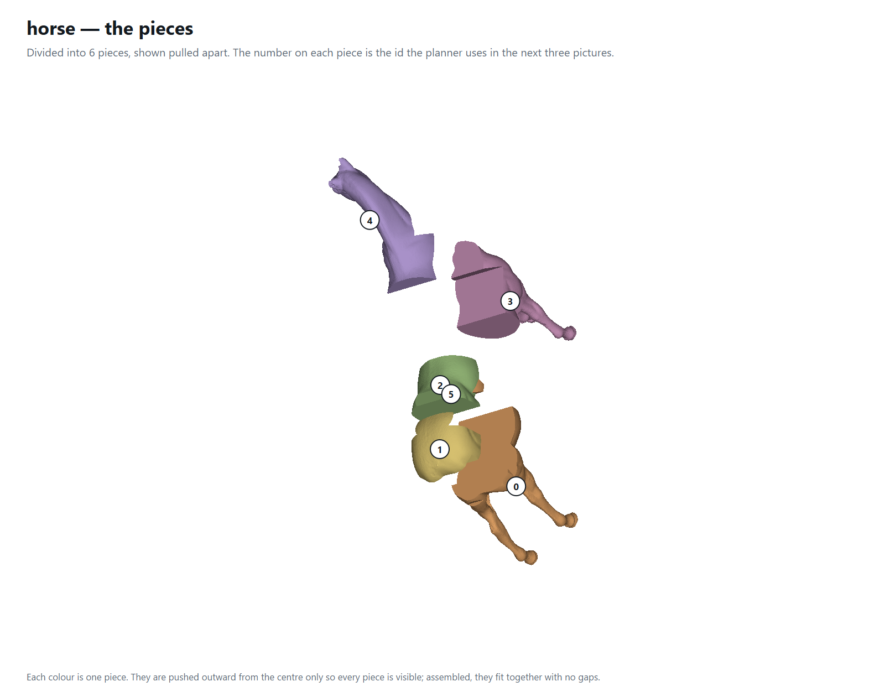
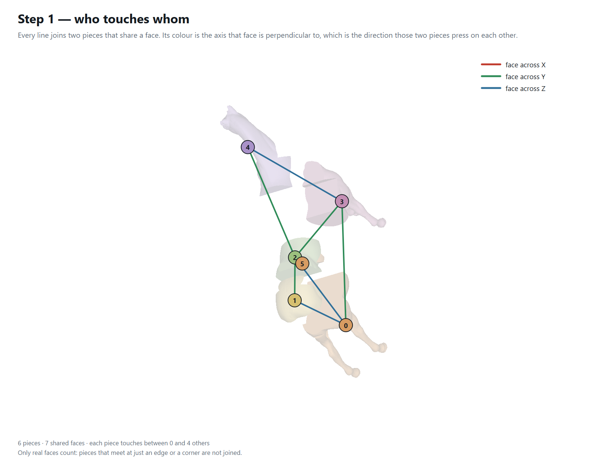
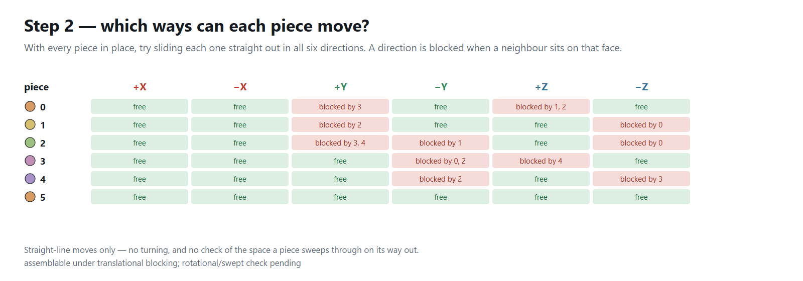
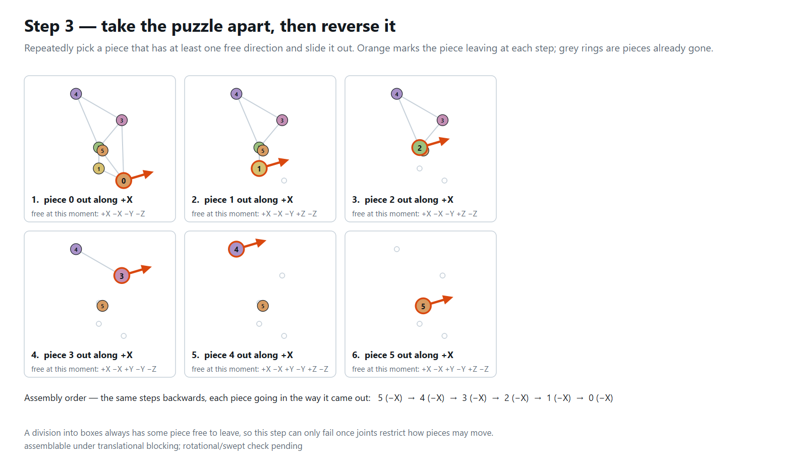

horse
Division report · 2026-09-21 12:30
The model
| Vertices | 48,485 |
|---|
| Triangles | 96,966 |
|---|
| Bounding box | 0.08401 × 0.1833 × 0.1528 |
|---|
| Watertight | yes |
|---|
| Volume (divergence) | 0.000263418 |
|---|
| Volume (voxel fill) | 0.000263516 · 100% of the divergence volume |
|---|
Two independent measures. The divergence integral counts every shell it is given, so a mesh with interior geometry reads high; the voxel fill uses parity down each column and reports what is actually solid. Them disagreeing is a fact about the model, not about the division.
The division
| Mode | Random |
|---|
| Divided | V-rep (bounding cage) |
|---|
| Pieces asked for | 5 |
|---|
| Cells produced | 5 |
|---|
| Pieces kept | 6 |
|---|
| Seed | 7 |
|---|
| Voxel grid | 44 × 96 × 80 = 337,920 voxels, 37,829 filled (11.2%), side 0.001909 |
|---|
| Trim (Elber §5) | 5 trimmed to the model, 0 empty cell(s) dropped, 0 failed, 1 detached lump(s) kept as separate piece(s) - a cell clipped material not connected to the rest of it |
|---|
| Joints | dovetail cut into 6 of 7 shared faces, 1 left straight (the order needs them flat, or the junction is too thin to notch) |
|---|
Time
| Voxelise the model | 138 ms |
|---|
| Choose the cuts | 1,653 ms |
|---|
| Extract the pieces | 1 ms |
|---|
| Trim to the model | 19,861 ms |
|---|
| Cut the joints | — |
|---|
| Draw the planner pictures | 603 ms |
|---|
| Total | 20,489 ms |
|---|
The pieces
| Count | 6 |
|---|
| Triangles, all pieces | 104,628 |
|---|
| Largest / smallest side | 0.1071 / 0.05191 · spread 2.06× |
|---|
| Volume, all pieces | 0.000267906 · 101.7% of the model |
|---|
| # | origin X | origin Y | origin Z | size X | size Y | size Z | triangles | volume | % of model | closed |
|---|
| 0 | -0.01294 | -0.09167 | -0.07621 | 0.05483 | 0.08931 | 0.09396 | 30,662 | 6.8261e-05 | 25.9 | yes |
| 1 | -0.01233 | -0.07385 | 0.008627 | 0.05434 | 0.04506 | 0.02884 | 9,702 | 2.9698e-05 | 11.3 | yes |
| 2 | -0.01234 | -0.04099 | 0.008627 | 0.05364 | 0.03862 | 0.02673 | 8,868 | 3.6916e-05 | 14 | yes |
| 3 | -0.01167 | -0.002361 | -0.07642 | 0.04883 | 0.06031 | 0.1071 | 29,428 | 7.2425e-05 | 27.5 | yes |
| 4 | -0.042 | -0.002361 | 0.01553 | 0.07766 | 0.09403 | 0.06089 | 24,934 | 5.5892e-05 | 21.2 | yes |
| 5 | -0.01201 | -0.02843 | 0.0101 | 0.05191 | 0.01352 | 0.01004 | 1,034 | 4.7146e-06 | 1.79 | yes |
The assembly planner
| Shared faces | 7 |
|---|
| Neighbours per piece | 0 to 4 |
|---|
| Order found | yes |
|---|
| Assembly order | 5 (-X) → 4 (-X) → 3 (-X) → 2 (-X) → 1 (-X) → 0 (-X) |
|---|
assemblable under translational blocking; rotational/swept check pending
A division into boxes always has some piece free to leave, so a successful order here is expected and carries little information. The test starts to bite once joints restrict how pieces may move, or once a swept-volume check replaces straight-line blocking.
The planner, drawn

The pieces, pulled apart, numbered with the ids the planner uses.

Step 1 — every line joins two pieces that share a face, coloured by the axis that face is perpendicular to.

Step 2 — for each piece, which of the six straight moves are blocked, and by which neighbour.

Step 3 — the pieces taken off one at a time; reversed, this is the assembly order.